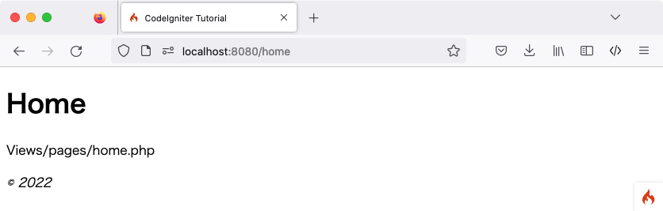

Halaman Statis
Catatan
Tutorial ini mengasumsikan Anda telah mengunduh CodeIgniter dan menginstal framework di lingkungan pengembangan Anda.
Hal pertama yang akan Anda lakukan adalah mengatur aturan routing untuk menangani halaman statis.
Mengatur Aturan Routing
Routing mengasosiasikan URI dengan metode controller. Controller hanyalah sebuah class yang membantu mendelegasikan pekerjaan. Kita akan membuat controller nanti.
Mari kita atur aturan routing. Buka file routes yang terletak di app/Config/Routes.php.
Satu-satunya direktif route yang ada di awal seharusnya adalah:
<?php
use CodeIgniter\Router\RouteCollection;
/**
* @var RouteCollection $routes
*/
$routes->get('/', 'Home::index');
Direktif ini mengatakan bahwa setiap permintaan masuk tanpa konten
yang ditentukan harus ditangani oleh metode index() di dalam controller Home.
Tambahkan baris berikut, setelah direktif route untuk '/'.
use App\Controllers\Pages;
$routes->get('pages', [Pages::class, 'index']);
$routes->get('(:segment)', [Pages::class, 'view']);
CodeIgniter membaca aturan routingnya dari atas ke bawah dan merutekan permintaan ke aturan yang cocok pertama. Setiap aturan adalah ekspresi reguler (sisi kiri) yang dipetakan ke nama controller dan metode (sisi kanan). Ketika permintaan masuk, CodeIgniter mencari kecocokan pertama, dan memanggil controller dan metode yang sesuai, mungkin dengan argumen.
Informasi lebih lanjut tentang routing dapat ditemukan di URI Routing.
Di sini, aturan kedua dalam objek $routes cocok dengan permintaan GET
ke jalur URI /pages, dan memetakan ke metode index() dari class Pages.
Aturan ketiga dalam objek $routes cocok dengan permintaan GET ke segmen URI
menggunakan placeholder (:segment), dan meneruskan parameter ke
metode view() dari class Pages.
Mari Kita Buat Controller Pertama Kita
Hal berikutnya yang akan Anda lakukan adalah mengatur controller untuk menangani halaman statis. Controller hanyalah sebuah class yang membantu mendelegasikan pekerjaan. Ini adalah perekat aplikasi web Anda.
Membuat Pages Controller
Buat file di app/Controllers/Pages.php dengan kode berikut.
Penting
Anda harus selalu berhati-hati tentang huruf besar/kecil nama file. Banyak pengembang mengembangkan di sistem file yang tidak peka huruf besar/kecil di Windows atau macOS. Namun, sebagian besar lingkungan server menggunakan sistem file yang peka huruf besar/kecil. Jika huruf besar/kecil nama file salah, kode yang berfungsi secara lokal tidak akan berfungsi di server.
<?php
namespace App\Controllers;
class Pages extends BaseController
{
public function index()
{
return view('welcome_message');
}
public function view(string $page = 'home')
{
// ...
}
}
Anda telah membuat class bernama Pages, dengan metode view() yang menerima
satu argumen bernama $page. Ia juga memiliki metode index(), sama
dengan controller default yang ditemukan di app/Controllers/Home.php; metode itu
menampilkan halaman selamat datang CodeIgniter.
Catatan
Ada dua fungsi view() yang disebut dalam tutorial ini.
Salah satunya adalah metode class yang dibuat dengan public function view($page = 'home')
dan return view('welcome_message') untuk menampilkan view.
Keduanya secara teknis adalah fungsi. Tetapi ketika Anda membuat fungsi dalam sebuah class,
itu disebut metode.
Class Pages memperluas class BaseController yang memperluas
class CodeIgniter\Controller. Ini berarti class Pages yang baru dapat mengakses
metode dan properti yang didefinisikan dalam class CodeIgniter\Controller
(system/Controller.php).
Controller adalah apa yang akan menjadi pusat setiap permintaan ke
aplikasi web Anda. Seperti class PHP lainnya, Anda merujuknya
dalam controller Anda sebagai $this.
Membuat View
Sekarang setelah Anda membuat metode pertama Anda, saatnya membuat beberapa template halaman dasar. Kita akan membuat dua "view" (template halaman) yang berfungsi sebagai footer dan header halaman kita.
Buat header di app/Views/templates/header.php dan tambahkan kode berikut:
<!doctype html>
<html>
<head>
<title>Tutorial CodeIgniter</title>
</head>
<body>
<h1><?= esc($title) ?></h1>
Header berisi kode HTML dasar yang ingin Anda tampilkan
sebelum memuat view utama, bersama dengan judul. Ini juga akan
mengeluarkan variabel $title, yang akan kita definisikan nanti di controller.
Sekarang, buat footer di app/Views/templates/footer.php yang
menyertakan kode berikut:
<em>© 2022</em>
</body>
</html>
Catatan
Jika Anda melihat lebih dekat pada template header.php kita menggunakan fungsi esc().
Ini adalah fungsi global yang disediakan oleh CodeIgniter untuk membantu mencegah
serangan XSS. Anda dapat membaca lebih lanjut tentangnya di Global Functions and Constants.
Menambahkan Logika ke Controller
Membuat home.php dan about.php
Sebelumnya Anda telah mengatur controller dengan metode view(). Metode
ini menerima satu parameter, yaitu nama halaman yang akan dimuat.
Isi halaman statis akan terletak di direktori app/Views/pages.
Di direktori itu, buat dua file bernama home.php dan about.php. Di dalam file-file tersebut, ketik beberapa teks - apa pun yang Anda inginkan - dan simpan. Jika Anda ingin menjadi sangat tidak orisinal, coba "Hello World!".
Menyelesaikan Metode Pages::view()
Untuk memuat halaman-halaman tersebut, Anda harus memeriksa apakah halaman yang diminta
benar-benar ada. Ini akan menjadi isi dari metode view()
di controller Pages yang dibuat di atas:
<?php
namespace App\Controllers;
// Add this line to import the class.
use CodeIgniter\Exceptions\PageNotFoundException;
class Pages extends BaseController
{
// ...
public function view(string $page = 'home')
{
if (! is_file(APPPATH . 'Views/pages/' . $page . '.php')) {
// Whoops, we don't have a page for that!
throw new PageNotFoundException($page);
}
$data['title'] = ucfirst($page); // Capitalize the first letter
return view('templates/header', $data)
. view('pages/' . $page)
. view('templates/footer');
}
}
Dan tambahkan use CodeIgniter\Exceptions\PageNotFoundException; setelah baris namespace
untuk mengimpor class PageNotFoundException.
Sekarang, ketika halaman yang diminta benar-benar ada, halaman tersebut dimuat, termasuk header dan footer, dan dikembalikan ke pengguna. Jika controller mengembalikan string, itu ditampilkan kepada pengguna.
Catatan
Controller harus mengembalikan string atau objek Response.
Jika halaman yang diminta tidak ada, kesalahan "404 Halaman tidak ditemukan" akan ditampilkan.
Baris pertama dalam metode ini memeriksa apakah halaman benar-benar ada.
Fungsi native PHP is_file() digunakan untuk memeriksa apakah file
berada di tempat yang diharapkan. PageNotFoundException adalah pengecualian CodeIgniter
yang menyebabkan halaman kesalahan 404 Page Not Found ditampilkan.
Dalam template header, variabel $title digunakan untuk menyesuaikan
judul halaman. Nilai judul didefinisikan dalam metode ini, tetapi alih-alih
menetapkan nilai ke variabel, itu ditetapkan ke elemen judul
dalam array $data.
Hal terakhir yang harus dilakukan adalah memuat view dalam urutan
yang seharusnya ditampilkan. Fungsi view() yang terpasang di
CodeIgniter akan digunakan untuk melakukan ini. Parameter kedua dalam fungsi view()
digunakan untuk meneruskan nilai ke view. Setiap nilai dalam array $data
ditetapkan ke variabel dengan nama kuncinya. Jadi nilai dari
$data['title'] dalam controller setara dengan $title dalam
view.
Catatan
Setiap nama file dan direktori yang diteruskan ke fungsi view() HARUS
sesuai dengan huruf besar/kecil direktori dan file itu sendiri atau sistem akan
melemparkan kesalahan pada platform yang peka huruf besar/kecil. Anda dapat membaca lebih lanjut tentangnya di
View (Template).
Menjalankan Aplikasi
Siap untuk menguji? Anda tidak dapat menjalankan aplikasi menggunakan server bawaan PHP, karena tidak akan memproses aturan .htaccess yang disediakan di public dengan benar, dan yang menghilangkan kebutuhan untuk menentukan "index.php/" sebagai bagian dari URL. CodeIgniter memiliki perintah sendiri yang dapat Anda gunakan.
Dari baris perintah, di root proyek Anda:
php spark serve
akan memulai server web, yang dapat diakses di port 8080. Jika Anda mengatur bidang lokasi di browser Anda ke localhost:8080, Anda akan melihat halaman selamat datang CodeIgniter.
Sekarang kunjungi localhost:8080/home. Apakah itu dirutekan dengan benar ke metode view()
di controller Pages? Luar biasa!
Anda akan melihat sesuatu seperti berikut:
Anda sekarang dapat mencoba beberapa URL di kolom lokasi browser, untuk melihat apa yang dihasilkan
controller Pages yang Anda buat di atas...
URL |
Akan ditampilkan |
|---|---|
localhost:8080/ |
halaman "selamat datang" CodeIgniter. Hasil dari metode |
localhost:8080/pages |
hasil dari metode |
localhost:8080/home |
halaman "home" yang Anda buat di atas, karena kita secara
eksplisit memintanya. Hasil dari metode |
localhost:8080/about |
halaman "about" yang Anda buat di atas, karena kita secara eksplisit memintanya. |
localhost:8080/shop |
halaman kesalahan "404 - File Not Found", karena tidak ada app/Views/pages/shop.php. |